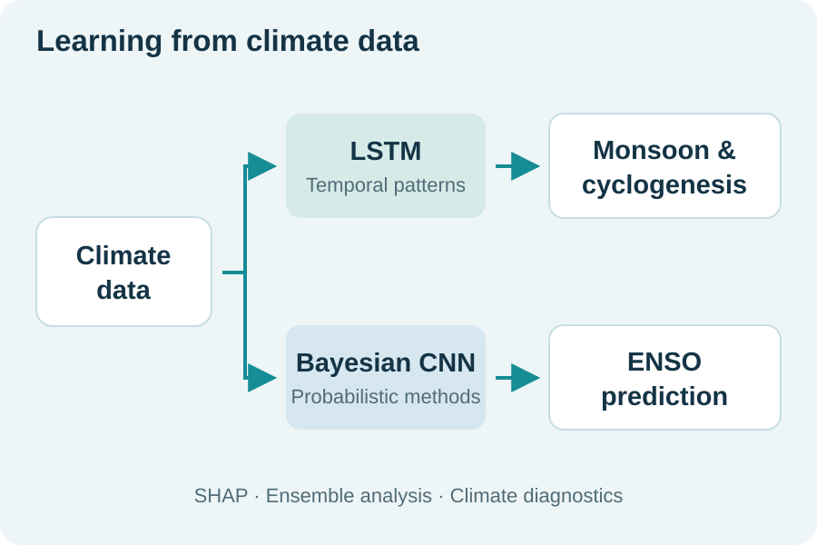

Decoding the Non-linear Impact of Monsoon on Cyclogenesis in the Bay of Bengal by Applying Deep Learning
Earth Systems and Environment
DOI: 10.1007/s41748-026-01196-2Publications & research outputs
Peer-reviewed work on monsoon–cyclogenesis links and the influence of the Madden–Julian Oscillation.

Peer-reviewed publications
Earth Systems and Environment
DOI: 10.1007/s41748-026-01196-2Atmospheric Research, 265, 105880
DOI: 10.1016/j.atmosres.2021.105880Research in progress
Research on Pacific forcing and monsoon teleconnections.
CORAL, Indian Institute of Technology Kharagpur.